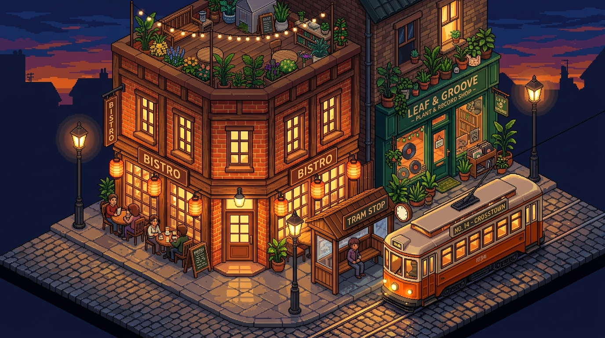

Brog City
A living, weather-synchronized pixel-art wallpaper engine for macOS.

1376 × 768 logical pixel canvas (2752 × 1536 retina export), where the compositor overlays working analog clock hands on the tram shelter clock face, pulsing lantern halos, and rising bistro cup steam.
Hand this prompt directly to your autonomous coding agent to build an implementation of this project:
Build this application according to the specification at https://redbrogdon.dev/specs/brog-city/spec.mdOverview
Most dynamic desktop wallpapers fall into one of two extremes: static photographs that slowly cross-fade between four time-of-day stills, or high-framerate video loops that continuously tax the GPU even when buried beneath a dozen application windows. Brog City was created to explore a calmer, more intentional middle ground—an ambient macOS wallpaper engine that treats the desktop background as a living, street-level 32-bit pixel-art diorama updated on a measured, minute-by-minute cadence.
Instead of distant, anonymous city skylines, Brog City frames tightly zoomed-in waterfront corners featuring only two adjacent buildings—a corner French bistro beside a vintage canal-side tram stop, an ivy-draped brick clocktower florist linked by a footbridge to a wooden tea house, a basement jazz cafe tucked next to a railway viaduct bookbinder, a sunlit timber boathouse beneath a rooftop pergola, and a winter canal apothecary across from a stone hearth bakery. Each vignette is grounded in real-world telemetry: the engine polls live meteorological conditions in Dublin, Ohio via the Open-Meteo API and reads the Mac's system clock to drive subtle ambient color grading and real-time procedural pixel animations. When paired with a Google Gemini API key, Brog City synthesizes a brand-new 16:9 isometric pixel-art illustration on each update cycle, while a native Swift AppKit controller manages a lightweight Menu Bar interface and samples Quartz window bounds every three seconds to automatically pause rendering whenever all monitors are covered.